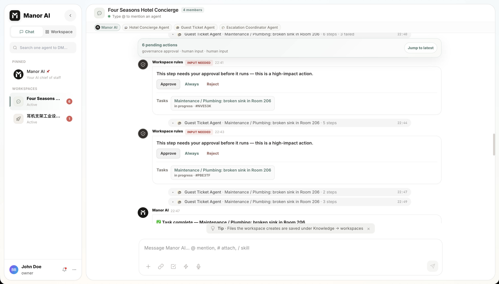

Human-in-the-Loop Governance
Human-in-the-loop (HITL) governance lets operators require approval before an agent performs sensitive actions.
Why HITL Matters
Agents can draft, search, summarize, and prepare work quickly. Some actions still need explicit human confirmation:
- Sending external messages.
- Publishing public content.
- Writing files in sensitive locations.
- Triggering integrations with side effects.
- Running shell commands.
Action Classes
Workspace rules are written in plain language and mapped to enforcement patterns the runtime applies to tool calls:
- Allowed: the agent can proceed.
- HITL required: the agent pauses; a human reviews the exact action and payload, then approves or rejects.
- Blocked: the action is denied before the tool runs.

Where Approvals Surface
Approvals meet you where the work happens:
| Surface | Behavior |
|---|---|
| Chat | An approval card renders inline; the run continues after your decision. |
| Tasks | An execution step shows as waiting on human input; resuming the task or retrying the step records your decision. Approval-type tasks carry an approve / request-changes panel of their own. |
| Plans | A generated plan can require sign-off before execution (POST /api/v1/plans/{plan_id}/approve). |
| Workflows | A wait node with approval semantics pauses the run for the run owner's explicit decision; a follow-up node can convert that approval into a durable, time-boxed action grant so recurring runs don't re-prompt for the same approved scope. |
Operational Guidance
Start conservative. Require HITL for irreversible or externally visible actions. After you trust a workflow and account boundary, selectively loosen approval requirements for low-risk automation — action grants and per-rule changes let you do that without turning governance off wholesale.
Review governance from the workspace's Governance view
(GET /api/v1/workspaces/{id}/governance), which shows the active rules and
how they map to enforcement.
Auditability
Approval prompts and tool calls leave evidence: what was requested, who approved it, and what happened next. Execution logs, the workspace activity feed, and run traces (with secrets scrubbed) make after-the-fact review possible without reconstructing events from memory.